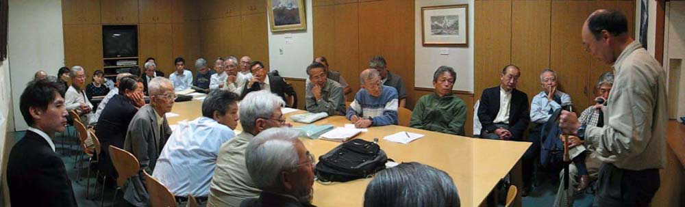
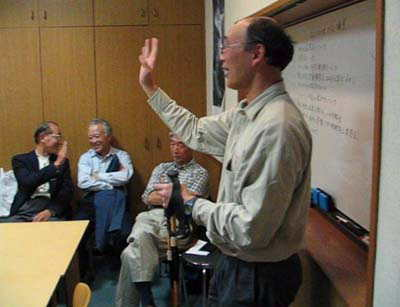

|
|||||||||||||||||||||||||||
|
スキー技術向上委員会 （シール歩行・登高の姿勢） |
| 開 催 日 | ２００７年１０月９日 | |||
| 説 明 者 | 高尾 文雄 | |||
| 撮 影 者 | 西田 進 | |||
| 参加者数 | 会員３２名、会員外１名 | |||
| シールの歩行について山スキーの技術書には必ず出てくるがあまり詳しいことは書かれていない。 いろいろコツのようなものがあったり、工夫するところがあるのだがあまり触れられていない。 今回、これまで私が人から教えていただいたり、自分で考えたりしたシール歩行のコツ、工夫をご紹介することになった。 人それぞれの歩き方があるように、シール歩行にも人によって違いが出てくるだろう。 |
|  |
| 集会室で高尾さんのレクチャーに聞き入る会員 右へスクロールしてご覧下さい → → → → |
|  |
| 上の写真をクリックすると、ビデオをご覧になれます |